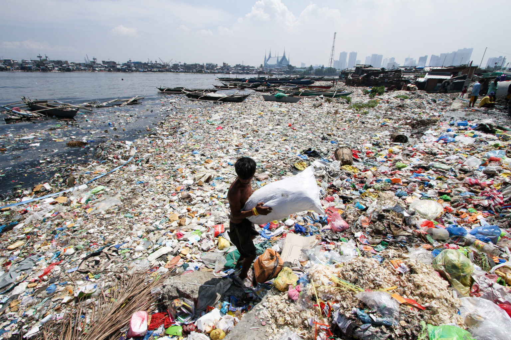
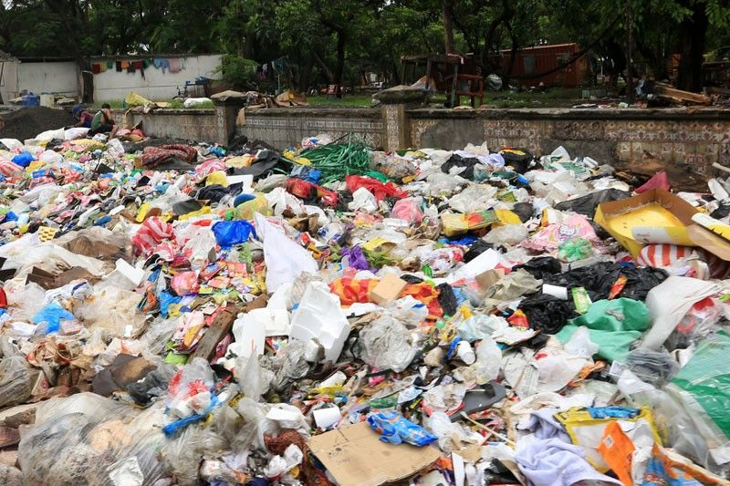

SIGN UP
SIGN UP
SIGN UP
SIGN UP
A serious environmental issue affecting communities, streets, and waterways across the Philippines.
Improper waste management is a serious environmental problem in the Philippines. Poor waste segregation, littering, and improper disposal cause garbage to accumulate in streets, communities, rivers, and other public areas. These practices contribute to air, land, and water pollution. They also clog drainage systems, which increases the risk of flooding during heavy rain. Improperly managed waste also threatens wildlife because animals often come into contact with or consume plastic and other harmful materials. This problem affects not only the environment but also the health, safety, and quality of life of Filipino communities.

The scale of the waste problem shows why proper segregation, recycling, reuse, collection, and disposal matter.

 Explore
Explore